Equipment
Electrochemistry
| 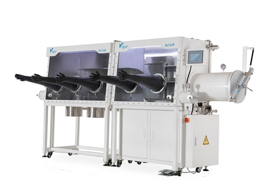 | Glove Box |
| 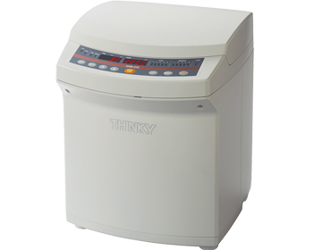 | Thinky Mixer |
| 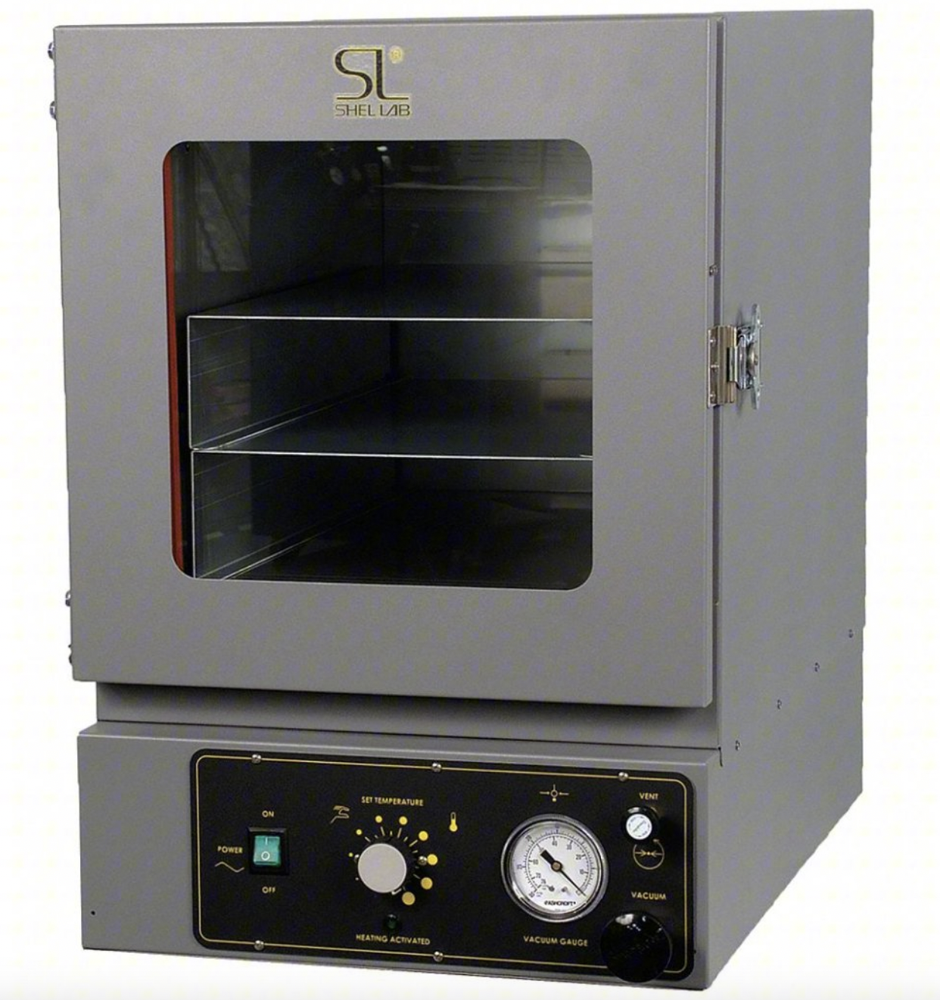 | Vaccum Oven |
| 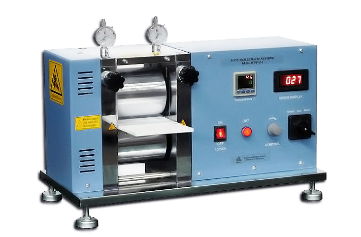 | Calendering Machine |
 |
Disc Cutter |
| 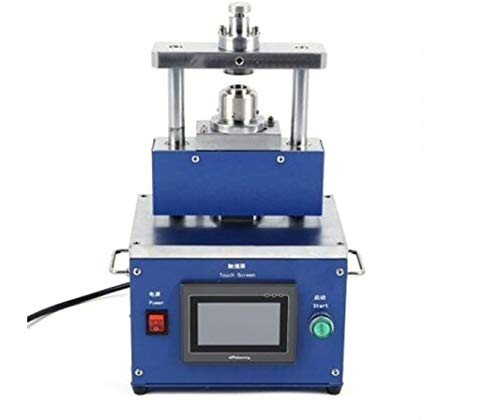 | Crimper |
| 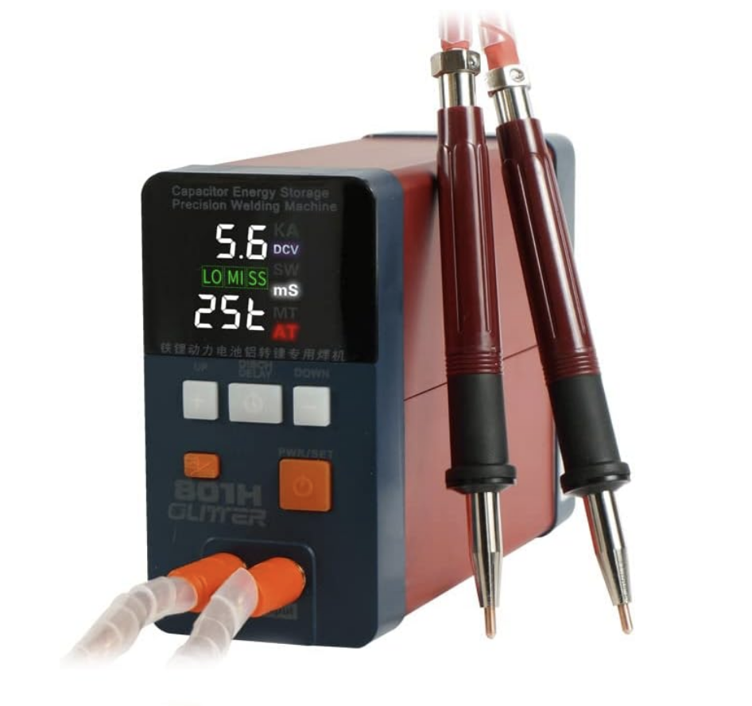 | Pulse Welder |
| 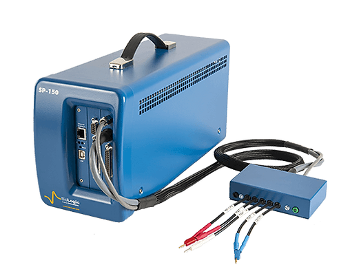 | Potentiostat |
| 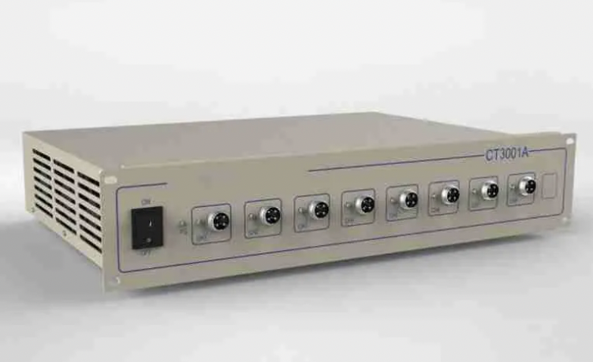 | Battery Cycler |
Photonics
| 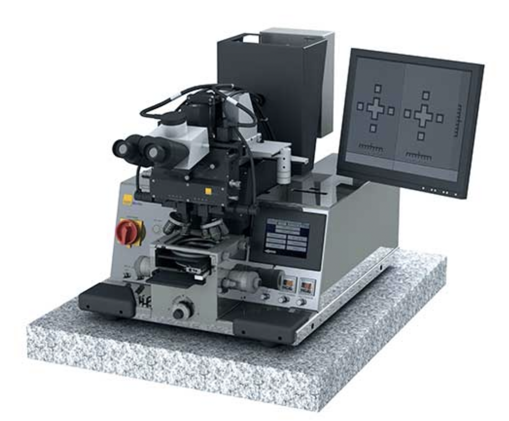 | Mask Aligner |
| 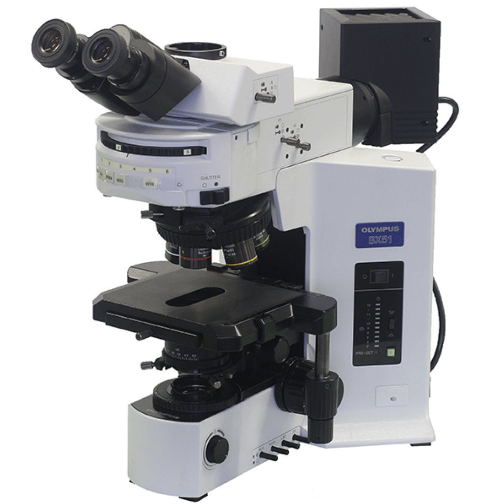 | Olympus Microscope |
| 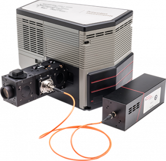 | Spectrometer |
| 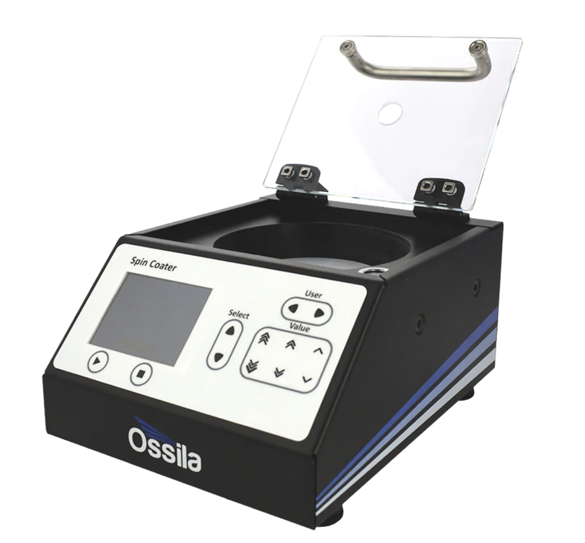 | Spin Coater |
| 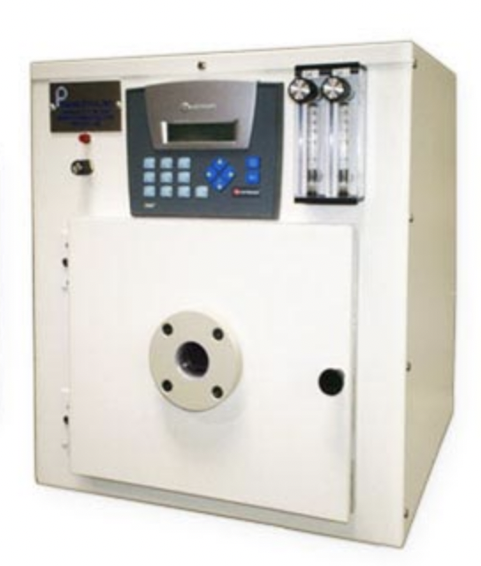 | Plasma Etcher |
| 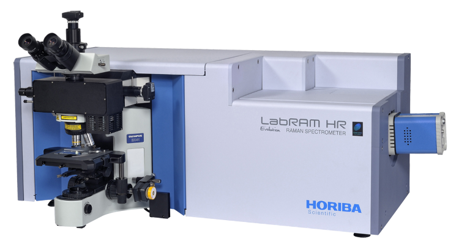 | Raman Microscope and Spectrometer |